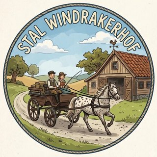
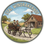

Tik op een dag om die hieronder in te vullen.
Vul je naam in bij een dag. Het wordt meteen opgeslagen en is voor iedereen met deze link zichtbaar.
Vink vast aan bij een naam om die persoon elke week automatisch op die dag terug te laten komen, tot iemand het weer uitvinkt.
Bij 🕗 kun je per dag de tijd van buiten zetten en binnen zetten invullen. Ook een tijd kun je vast zetten.
Zodra een nieuwe week begint, schuift "Volgende week" vanzelf door naar "Deze week". Oranje velden zijn nog niet ingevuld.
Met de knop 🐴 Wei-indeling rechtsboven zie je de foto van het whiteboard in de stal. Tik op de foto om hem groot te bekijken, met ▲ klap je hem weer in. Hangt er een nieuwe indeling? Kies ‘Nieuwe foto’; de vorige blijft bewaard en kun je terugzetten als er iets misging.
Het weerbericht (Puth, Limburg) komt van Open-Meteo.